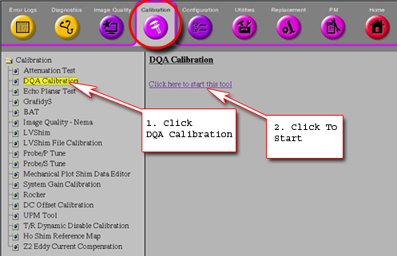

- 00000018WIA30307E20GYZ
- id_131067863.0
- Aug 29, 2019 1:36:11 AM
Isocenter Calibration (Auto Mode)
Prerequisites
| Required persons | Preliminary requirements | Procedure | Finalization |
|---|---|---|---|
| 1 | Not Applicable | 30 minutes | Not Applicable |
| Item | Quantity | Effectivity | Part number | Manufacturer |
|---|---|---|---|---|
| 1.5T DQA Phantom w Head Loader | 1 | - |
2321556 | - |
| 1.5T Split Head Coil ASM | 1 | - |
2341973 | - |
| ||||||||
| Condition | Reference | Effectivity |
|---|---|---|
|
Signa Software operational | - | - |
|
First image obtained. | - | - |
|
Alignment lights have been physically aligned. | - | - |
|
Table has been calibrated per “Longitudinal Drive System” calibration procedure | - | - |
Preparation for Scan
About this task
The electrical isocenter is the point where the x, y and z gradients are nulled. It is very important that this point be accurately located in order to pass the image quality tests. The procedure uses the DQA phantom and Daily Quality tool for analyzing the data. The Daily Quality tool analyzes the DQA image and determines the optional z direction offset that is needed to center the landmark at the z isocenter. The tool optionally updates the isoVectorZ value contained in the system configuration file (MRconfig.cfg). If you choose to update the system configuration file, you must reboot the system. Note: For TwinSpeed, the entire procedure only needs to be run on one gradient mode, Whole Body (WB). Running the procedure on both WB and ZOOM will not hurt, but is just not necessary.
Procedure
Start the DQA Tool- Prepare for DQA Analysis (Isocenter Cal)
About this task
The Daily Quality tool analyzes the DQA image to determine if the image is skewed in the x direction (x-y planes). Analysis performed on an image with a few degrees of skew will give an accurate isocenter location. If the image is skewed more than a few degrees, it will still be analyzed, but the adjust values for isoVector-Z may be inaccurate. In this case, the phantom should be repositioned and another scan performed.
Procedure
- Select Service Browser from Service Desktop
Manager (CSD). Refer to Figure 2.
Figure 2. Service Browser 
- Select Click here to start the tool.
Refer to Figure 3.
Figure 3. MR Service Desktop 
The Daily Quality Assurance Test tool will appear. See Figure 4 .
Figure 4. Calibration Tool 
- Select the Test Option – type 1 [1= Iso center (Z) Calibration] Enter.
- Type “Y” when prompted to perform the Final Test
run. See Figure 7.
Figure 7. Final Test Run 

Finalization
Procedure
- Remove all phantoms and coils from the magnet.
- Return the scanner to normal operation.